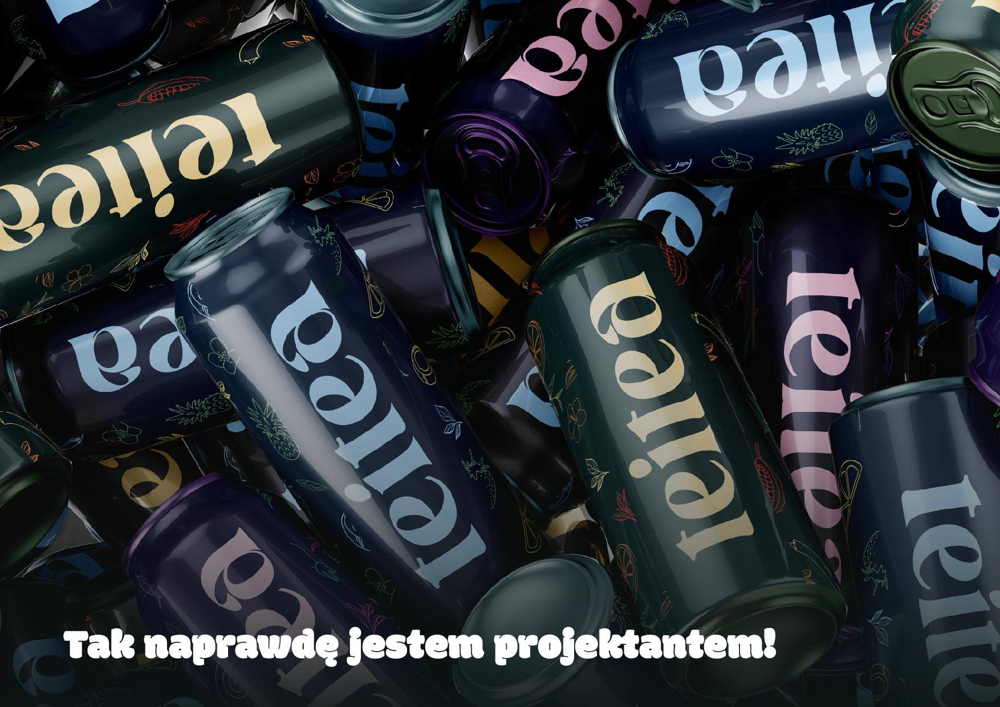

Pierwsze starcie
Pierwszy projekt stworzony podczas nauki programowania. Przedstawia walkę w lochach z trzema potworami. Jako gracz możemy uderzać mieczem, używać mikstur leczniczych, albo uciec z lochu.
c#
Kod źródłowyUczę się tworzyć strony internetowe.

Pierwszy projekt stworzony podczas nauki programowania. Przedstawia walkę w lochach z trzema potworami. Jako gracz możemy uderzać mieczem, używać mikstur leczniczych, albo uciec z lochu.
c#
Kod źródłowyDrugim projektem jest to portfolio - miejsce, gdzie będę mogła prezentować swoje umiejętności i progres.
HTML, CSS, JavaScript
Kod źródłowy